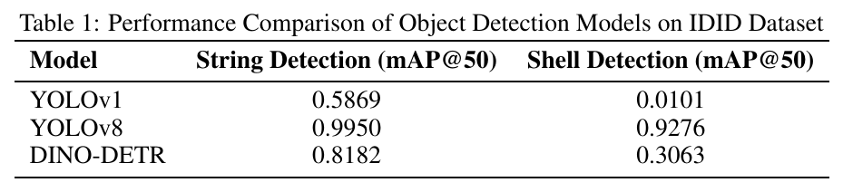
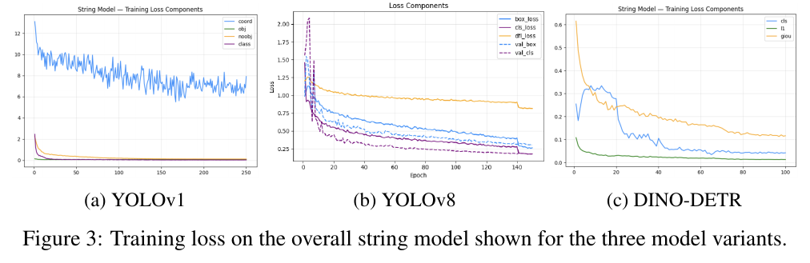

A computer vision project comparing three object-detection architectures — YOLOv1, YOLOv8, and DINO-DETR — for identifying defective power-line insulators in drone imagery, using the IDID dataset. I independently built and trained the YOLOv8 model, which outperformed both alternatives on every metric.
As part of a two-person deep learning project, our team set out to automate the detection of defective power-line insulators from aerial drone imagery, replacing the manual, human-in-the-loop inspection process utilities currently rely on. We used the IDID dataset and compared three object-detection architectures across two tasks: locating insulator strings and classifying individual shells as good, broken, or flashover-damaged.
I was responsible for independently building, training, and evaluating the YOLOv8 model — one of two variant architectures we tested against a YOLOv1 baseline, which I co-built with my teammate. My goal was to determine whether a more modern YOLO architecture could meaningfully outperform the baseline on both detection tasks, particularly the harder shell-classification task where the baseline struggled.
My YOLOv8 model was the best-performing architecture on both tasks: 99.5% mAP@50 on string detection (vs. 58.7% for YOLOv1) and 92.8% mAP@50 on shell-defect classification (vs. just 1.0% for YOLOv1) — also outperforming the transformer-based DINO-DETR model (81.8% / 30.6%). The result demonstrated that YOLOv8's convolutional inductive biases generalized more effectively than a transformer-based approach on a relatively small training set (1,120 images), a finding with direct implications for deploying practical, resource-efficient inspection models in the field.
// from the paper

